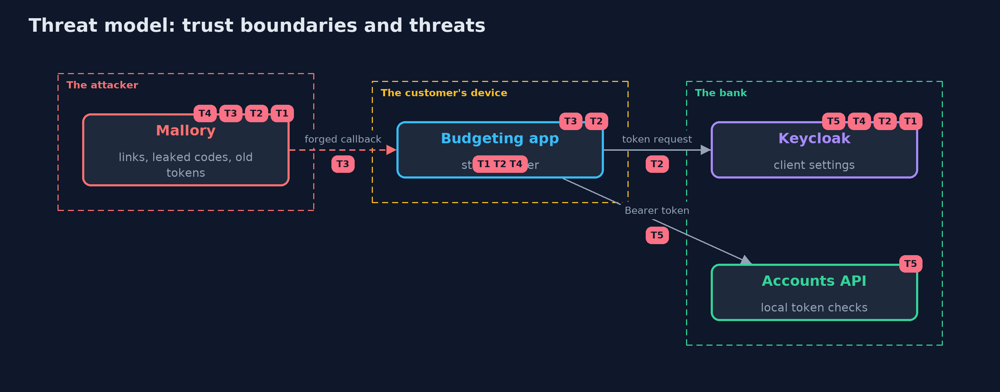

Threat Model — OAuth 2.0 Authorization Code with PKCE and Keycloak
A threat model answers four questions: what are we protecting, who or what could harm it, how, and what do we do about it. This one covers this project's own demo system, not a production deployment. Domain: an online bank.
Scope
The authorization code flow between a public client, a confidential client, Keycloak and a resource server. It covers redirect handling, code and token theft, state, scopes and refresh tokens. It does not cover Keycloak's own security or the client app's storage of tokens.
What we protect (assets)
- Ana's accounts.
- The authorization code, the refresh token and the access token.
Who and what acts on the system
- Ana, who signs in and consents.
- An app the bank has registered.
- Mallory, who can leak or forge a link, a code or an old token.
Trust boundaries
A trust boundary is a line that data or a request crosses between parts that trust each other differently. Threats cluster where those lines are.
- The browser to the app: the redirect carries the code.
- The app to Keycloak: the token endpoint.
- The app to the API: the bearer token.

Each dashed box is a trust boundary. A rose tag such as T1 shows where the threat of that number, in the table below, applies.
Threats, using STRIDE
STRIDE is a checklist of six kinds of threat: Spoofing (S), Tampering (T), Repudiation (R), Information disclosure (I), Denial of service (D), Elevation of privilege (E).
| Id | Kind | Threat | Where it shows up | Control in this project | What is left |
|---|---|---|---|---|---|
| T1 | Information disclosure | The authorization code is sent to an address the attacker controls | Keycloak's redirect address check | Exact registered redirect addresses; no prefix or wildcard match | A registered address that the attacker can use |
| T2 | Spoofing | A leaked code is redeemed by someone else | the token endpoint | S256 PKCE on every client, codes that work once and for a few seconds | A leak of the verifier as well |
| T3 | Spoofing | Mallory's code signs Ana into Mallory's account | the app's callback | A state bound to the browser session that started the sign-in | An app that skips the state check |
| T4 | Elevation of privilege | A stolen refresh token keeps access alive | the refresh grant | Rotation with no reuse; one reuse ends the session | A thief who uses the token before the real app does |
| T5 | Elevation of privilege | A revoked session still opens the API | a resource server with local checks | Short access tokens, and an online check for sensitive operations | The minutes between revocation and expiry |
Assumptions
- The redirect address uses https in production.
- Keycloak and the API are reached over TLS in production.
Out of scope
- Theft of tokens from the phone's storage.
- Compromise of Keycloak.
How the tests check this
KeycloakFlowTeststarts a real Keycloak and checks the flow, consent, a wrong password, tampered and ID tokens, scope, expiry, burned and expired codes, PKCE, redirect addresses, the state of the redirect, reuse of a code, refresh rotation, the implicit flow, the password grant and a confidential client.RealmFileTestchecks the settings in the realm file, andPkceTestthe parts of the app that need no server.DemoRunsTestcompares the whole demo with the golden output.
Where this model goes next
The next project in this module, openid-connect-with-spring-security-and-keycloak, uses the same server to sign users in to an application and to log them out everywhere.